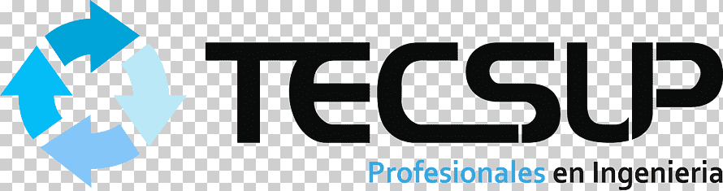

Angular · Aprendizaje real
Copiar código no es aprender: mi lección con Angular
Reflexión sobre el uso excesivo de IA y autocompletado, y cómo volver a aprender escribiendo código con las manos.
Leer artículo →Soy egresado de Ingeniería de Sistemas por la Universidad Nacional de San Agustín (UNSA)

y cuento con formación en TECSUP, institución prestigiosa de Arequipa.
Mi camino comenzó enseñando matemáticas y programación, lo que fortaleció mi capacidad para explicar, diseñar y estructurar sistemas claros. Hoy me enfoco en backend y cloud computing, construyendo aplicaciones escalables, mantenibles y pensadas para crecer sin romperse.
Mantengo el hábito de programar diariamente y registrar mis avances mediante commits en GitHub. Divido mi aprendizaje en objetivos concretos y construyo evidencia de mi progreso técnico con constancia.
Ver mi actividad en GitHubFundamentos de Programación fue uno de mis mayores retos académicos. Tras varios intentos sin aprobar, cambié mi estrategia de aprendizaje y estudié en TECSUP mientras trabajaba como docente para financiar mi formación. Al regresar a la universidad, aprobé la asignatura. Esta experiencia me enseñó a reconocer mis dificultades, ajustar mi método y perseverar hasta alcanzar mis objetivos.

Universidad Nacional de San Agustín
Plataforma web orientada al aprendizaje de programación y patrones de diseño mediante ejercicios prácticos, reglas de negocio y resolución de problemas algorítmicos.
APIs REST con Java 21 y Spring Boot, DTOs, autenticación JWT e idempotencia. Aplicación de POO, SOLID y patrones Strategy y Factory.
SPA en Angular integrada con el backend mediante APIs REST. Modelo relacional en PostgreSQL para la persistencia e integridad de los datos.
Despliegue en Azure Static Web Apps, Azure App Service y Azure Database for PostgreSQL. Automatización de pruebas y entrega mediante Jenkins y GitHub Actions.
Arquitectura: Angular → API REST → Spring Boot → PostgreSQL. · Prácticas: SOLID, Git, Docker y separación de responsabilidades.

VibraDigital
Desarrollé soluciones de automatización y sitios web, desde el levantamiento de requerimientos y el prototipado hasta la implementación y el despliegue.
Automaticé notificaciones por correo para el control de asistencia escolar y la gestión de incidencias mediante Make, reduciendo tareas manuales y mejorando los tiempos de respuesta.
Gestioné requerimientos, prototipado en Figma, implementación de sitios web, configuración de servidores y despliegue mediante cPanel.

UPGRADE
Participé en el desarrollo de soluciones empresariales, desde el levantamiento de requerimientos y prototipado hasta la implementación de funcionalidades y el análisis de datos en entornos reales.
Elaboré requerimientos y mockups en Figma y participé en el desarrollo de funcionalidades para comercio electrónico y gestión comercial, incluyendo módulos administrativos y dashboards.
Diseñé la solución funcional para monitorear y detectar posibles robos de combustible para MCA Constructores.
Trabajé en una aplicación de control de asistencia mediante códigos QR y en un asistente de ventas apoyado en herramientas de IA.
Consulté datos con SQL y PostgreSQL, comprendiendo la lógica de negocio y los procesos operativos del ERP.

Sistema de Matrículas de Posgrado · UNSA
Desarrollé un sistema de matrículas para la Escuela de Posgrado, integrando una API REST en Java con una interfaz web en Angular para la gestión de estudiantes y matrículas.
Implementé APIs REST con Java 21 y Spring Boot, utilizando DTOs, autenticación JWT y persistencia con Spring Data JPA, Hibernate y PostgreSQL. Apliqué POO y principios SOLID para separar las responsabilidades de la lógica de negocio.
Desarrollé una SPA con Angular, organizada en componentes y servicios para consumir las APIs. Implementé interceptores HTTP para gestionar el envío de credenciales JWT y el control de acceso.
Arquitectura: Angular → API REST → Spring Boot → PostgreSQL. · Principios: separación de responsabilidades y SOLID.
Grupo Bryce – Colegio Bryce
Resolución de problemas y comunicación efectiva, competencias que hoy aplico en el diseño de APIs y lógica de negocio.
Git / GitHub / GitLab
Docker
Postman / Swagger
SCRUM
Jira
Trello
MS Project
Diagrama de Gantt
Desarrollo de APIs, lógica de negocio y sistemas empresariales con enfoque en mantenibilidad.
Interfaces web con Angular, componentes reutilizables y consumo de APIs REST.
Integración entre sistemas, APIs externas y servicios existentes.
Despliegue de aplicaciones y entornos básicos en la nube.
Corrección de bugs, mejoras y soporte sobre sistemas existentes.
Creación, personalización y mantenimiento de sitios web en WordPress.
Universidad Nacional de San Agustín · Desde enero de 2026
Plataforma web para aprender programación y aplicar patrones de diseño mediante ejercicios prácticos.
APIs REST con Spring Boot, autenticación JWT, DTOs e idempotencia. Aplicación de SOLID y patrones Strategy y Factory.
SPA en Angular integrada con el backend. Modelado relacional en PostgreSQL para persistencia e integridad de datos.
Despliegue en Azure Static Web Apps y App Service, PostgreSQL administrado y automatización mediante Jenkins y GitHub Actions.
Arquitectura: Angular → API REST → Spring Boot → PostgreSQL · Buenas prácticas: SOLID, Strategy, Factory y Git.
Sistema CRM empresarial para gestión de clientes y ventas. Desarrollo de interfaces, módulos ERP y dashboards.
Sistema para detección y control de robo de combustible. Integración Angular + .NET y diseño de interfaces.
Plataforma de comercio electrónico con autenticación JWT, carrito de compras y panel administrativo.
Evidencia de capacidad analítica, arquitectura de software y rigor científico.
Revista Innovación y Software (2024)
Comparativa de modelos (Regresión vs. Árboles) en un dataset de 32,000 registros. Se demostró la superioridad del Árbol de Decisión con una precisión del 87.9%.
Revisión Sistemática
Análisis de factores de éxito y métricas críticas (escalabilidad, resiliencia) para la migración bancaria. Se define un marco integral sobre automatización, desacoplamiento y orquestación en entornos financieros.
Líder Técnico · Upgrade Sistemas
+51 997560905
"Crhistian demuestra compromiso y capacidad para adaptarse rápidamente. Su experiencia en Angular, documentación clara y comunicación efectiva aportan valor real al equipo de desarrollo."
Proyecto CRM Empresarial
"Trabajar con Crhistian es sencillo: comunica bien, pregunta cuando no entiende y se enfoca en resolver problemas reales. Su background en docencia se nota en la forma clara de explicar."
Institución Educativa
"Durante más de 5 años, Crhistian destacó como docente por su responsabilidad, liderazgo y capacidad para explicar conceptos complejos de forma sencilla. Hoy esas habilidades se reflejan en su trabajo como desarrollador backend."
Reflexión sobre el uso excesivo de IA y autocompletado, y cómo volver a aprender escribiendo código con las manos.
Leer artículo →Explicación sencilla del flujo de datos en Angular usando una mini tienda como ejemplo práctico.
Leer artículo →Cómo aplicar el hábito de la proactividad cuando fallas en un examen técnico o enfrentas presión laboral.
Leer artículo →¿Tienes una oportunidad, proyecto o idea técnica? Estoy abierto a conversar sobre desarrollo backend, cloud y aprendizaje continuo.
cpacori@unsa.edu.pe
Prefiero el contacto directo y claro.
Escríbeme un correo